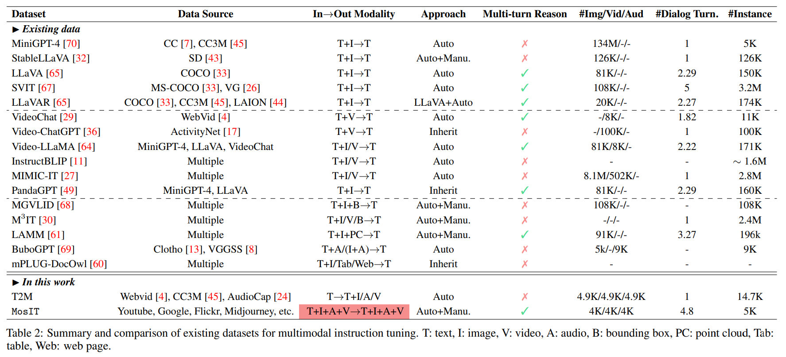

While recently Multimodal Large Language Models (MM-LLMs) have made exciting strides, they mostly fall prey to the limitation of only input-side multimodal understanding, without the ability to produce content in multiple modalities. As we humans always perceive the world and communicate with people through various modalities, developing any-to-any MM-LLMs capable of accepting and delivering content in any modality becomes essential to human-level AI. To fill the gap, we present an end-to-end general-purpose any-to-any MM-LLM system, NExT-GPT. We connect an LLM with multimodal adaptors and different diffusion decoders, enabling NExT-GPT to perceive inputs and generate outputs in arbitrary combinations of text, images, videos, and audio. By leveraging the existing well-trained highly-performing encoders and decoders, NExT-GPT is tuned with only a small amount of parameter (1%) of certain projection layers, which not only benefits low-cost training and also facilitates convenient expansion to more potential modalities. Moreover, we introduce a modality-switching instruction tuning (MosIT) and manually curate a high-quality dataset for MosIT, based on which NExT-GPT is empowered with complex cross-modal semantic understanding and content generation. Overall, our research showcases the promising possibility of building an AI agent capable of modeling universal modalities, paving the way for more human-like AI research in the community.

Figure 1: By connecting LLM with multimodal adaptors and diffusion decoders, NExT-GPT achieves universal multimodal understanding and any-to-any modality input and output.
In Figure 2 we further illustrate the inference procedure of NExT-GPT. Given certain user inputs of any combination of modalities, the corresponding modal encoders and projectors transform them into feature representations and passed to LLM (except the text inputs, which will be directly fed into LLM). Then, LLM decides what content to generate, i.e., textual tokens, and modality signal tokens. If LLM identifies a certain modality content (except language) to be produced, a special type of token will be output indicating the activation of that modality; otherwise, no special token output means deactivation of that modality. Technically, we design the '<IMGi>' (i=0,...,4) as image signal tokens; '<AUDi>' (i=0,...,8) as audio signal tokens; and '<VIDi>' (i=0,...,24) as video signal tokens. After LLM, the text responses are output to the user; while the representations of the signal tokens of certain activated modalities are passed to the corresponding diffusion decoders for content generation.

Figure 2: NExT-GPT inference process. Grey colors denote the deactivation of the modules.
We design the system with mainly three tiers in loose coupling, and we only need to update the two projection layers at encoding side and decoding side.
Figure 3: Illustration of the lightweight multimodal alignment learning of encoding and decoding.
Further instruction tuning (IT) is necessary to enhance the capabilities and controllability of LLM. To facilitate the development of any-to-any MM-LLM, we propose a novel Modality-switching Instruction Tuning (MosIT). As illustrated in Figure 4, when an IT dialogue sample is fed into the system, the LLM reconstructs and generates the textual content of input (and represents the multimodal content with the multimodal signal tokens). The optimization is imposed based on gold annotations and LLM's outputs. In addition to the LLM tuning, we also fine-tune the decoding end of NExT-GPT. We align the modal signal token representation encoded by the output projection with the gold multimodal caption representation encoded by the diffusion condition encoder. Thereby, the comprehensive tuning process brings closer to the goal of faithful and effective interaction with users.

Figure 4: Illustration of modality-switching instruction tuning.
All the existing IT datasets fail to meet the requirements for our any-to-any MM-LLM scenario. We thus construct the MosIT dataset of high quality. The data encompasses a wide range of multimodal inputs and outputs, offering the necessary complexity and variability to facilitate the training of MM-LLMs that can handle diverse user interactions and deliver desired responses accurately.
@articles{wu2023nextgpt,
title={NExT-GPT: Any-to-Any Multimodal LLM},
author={Shengqiong Wu, Hao Fei, Leigang Qu, Wei Ji, Tat-Seng Chua},
journal = {CoRR},
volume = {abs/2309.05519},
year={2023}
}